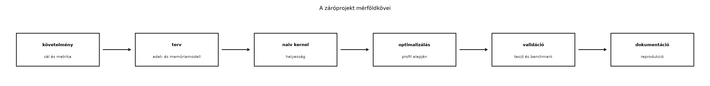

A záróprojekt első lépése nem a kódírás, hanem annak a mérnöki szerződésnek a rögzítése, amelyhez a későbbi implementációkat és optimalizálásokat viszonyítjuk. Ezt a szerződést nevezzük projekt charternek. A tapasztalat azt mutatja, hogy a GPGPU-munkák leggyakoribb kudarcforrása nem a kernel hibája, hanem a nem elég pontosan definiált cél, a rögzítetlen környezet vagy a kétértelmű sikerességi feltétel. Ha a követelményeket nem írjuk le reprodukálható módon, akkor a későbbi optimalizálási állítások – például hogy „a kernel 2,3-szor gyorsabb” – nem ellenőrizhetők, és a fejlesztés iránya is esetlegessé válik.
Ebben a fejezetben a záróprojekt követelményeit és architektúráját rögzítjük. A cél nem az, hogy megírjuk a végleges kernelt – ez a következő egység (Kernelimplementáció) feladata –, hanem hogy egy olyan dokumentumot és mérési alapot hozzunk létre, amelyhez minden további lépés tartja magát. A fejezet laborja egy projekt chartert készít, és egy kis CUDA-programmal feltárja a rendelkezésre álló GPU architektúráját, rögzíti a driver- és CUDA-verziót, elvégzi a baseline mérést, majd elkülöníti a mért és a várt (elméleti) eredményeket.

A „záróprojekt: optimalizált GPGPU rendszer” megfogalmazás önmagában nem elegendő specifikáció. A GPU-programozásban a teljesítmény erősen függ a hardvertől, az adatmintáktól, a pontosságtól és a mérési módszertantól. Ha ezeket nem rögzítjük, egy későbbi mérési eredmény nem reprodukálható, és nem tudjuk eldönteni, hogy egy adott módosítás valódi javulás-e, vagy csupán a gyorsabb órajel, a kisebb inputméret vagy a háttérterhelés hiányának a következménye.
A projekt charter ezért írásos egyezség a mérnök számára; legalább annyira fontos, mint a kód. Tartalmaznia kell:
A charterben leírtak képezik a baseline-t: az első, egyszerű, de helyes implementációt, amelyhez képest minden optimalizálást mérünk. A baseline-t a fejezet laborjában a GPU-architektúra lekérdezésével és egy memória-sávszélesség méréssel alapozzuk meg.
A cél leírásának a következő kérdésekre kell válaszolnia:
Példaként nézzünk egy tipikus charter-részletet:
Projekt neve: 2D hődiffúziós stencil GPU-n. Cél: Adott egy 4096 × 4096 cellából álló rács, ahol minden cella FP32 hőmérsékletet tárol. A feladat 1000 időlépés szimulációja explicit Jacobi-iterációval. Minden időlépésben a cella új értéke a négy szomszéd átlaga: . A kezdeti mező determinisztikus, egy ismert függvényből generált. Kimenet: Az utolsó időlépés mezője, amelyet egy referenciamegoldással hasonlítunk össze. A maximális abszolút hiba FP32 esetén legfeljebb lehet. Siker: A kernel futásideje a GPU-n 1000 időlépésre 100 ms alatt legyen; az elméleti memória-sávszélesség legalább 80%-át érjük el a mérésben. Az eredménynek determinisztikusnak kell lennie.
Ebben a példában a cél konkrét, mérhető és ellenőrizhető. A „100 ms alatt” egy adott GPU-ra vonatkozik, amelyet a környezet részben rögzítünk.
A korlátok a következő kategóriákba sorolhatók:
cudaGetDeviceProperties hívással rögzítjük. Ha a GPU egy
bérelt vagy megosztott környezetben fut (például MIG partición), a
konfigurációt pontosan le kell írni.nvidia-smi -pl), azt rögzíteni kell,
mert a teljesítményt erősen befolyásolja.A charterben ezeket a korlátokat konkrét értékekkel kell feltölteni. Ha egy érték nem ismert, akkor azt „ellenőrzendő” jelöléssel kell szerepeltetni, nem szabad kitalálni.
A követelmények rögzítése után a projekt architektúráját kell leírni, még mielőtt a kernel kódját megírnánk. Ez a leírás három pilléren nyugszik: a számítási modell, a memóriamodell és az adatáramlás.
A számítási modell azt írja le, hogy a feladat milyen aritmetikai műveleteket végez, és mekkora az úgynevezett számítási intenzitás (compute intensity), azaz a FLOP-ok száma az átvitt bájtokhoz képest. Ez alapvetően meghatározza, hogy a feladat memória-korlátos vagy számítás-korlátos-e.
A charterben meg kell becsülni a FLOP/számot és az adatátvitelt, és ki kell számítani a roofline-modell szerinti várt felső korlátot. Ez a Roofline-modell–Roofline-alapú optimalizálás fejezetek anyagára épül, de itt csak annyit rögzítünk, hogy a projekt melyik tartományba esik, és melyik metrika lesz a mérvadó.
Példa a 2D stencilre:
A számítási modellben azt is rögzíteni kell, hogy használunk-e atomi műveleteket, integer aritmetikát, trigonometrikus függvényeket vagy más speciális utasításokat, mert ezek befolyásolják a teljesítményt és a pontosságot.
A memóriamodell az adatok elhelyezkedését és méretét írja le a CUDA-memóriahierarchiában:
A charterben fel kell sorolni, hogy az egyes adatszerkezetek melyik memóriatérben fognak lakni, és mekkora a várható méretük. Ez segít a későbbi erőforrás-tervezésben (például mennyi shared memory kell blokkonként, mennyi regiszter áll rendelkezésre).
Az adatáramlás a rendszer folyamatszemléletű leírása. A GPGPU-programok tipikus szakaszai:
Az adatáramlást érdemes egy flow diagrammon vagy rétegdiagrammon ábrázolni. A könyv jelölésrendszere szerint a diagramnak címmel, jelmagyarázattal és feltételjegyzettel kell rendelkeznie. A diagram például:
Host memória → cudaMemcpy(H2D) → Global memory → Shared memory → Regiszterek → Shared memory → Global memory → cudaMemcpy(D2H) → Host memóriaA nyilakon fel kell tüntetni a várható adatmennyiséget és a sávszélességet. Ha a projekt több streamet vagy CUDA graph-ot használ, az adatáramlásnak az átfedéseket is mutatnia kell.
Példa a stencil adatáramára:
A sikerességi metrikák két csoportba tartoznak: teljesítménymetrikák és helyességmetrikák. Mindkettőt a charterben konkrét számokkal kell megadni, és minden mérésnél el kell különíteni a mért és a várt értékeket.
Az alábbi mutatókat kell legalább rögzíteni:
cudaOccupancyMaxActiveBlocksPerMultiprocessor API adja
meg.A charterben minden metrikához meg kell adni a mérési módszert és a
kiértékelési szabályt. Például: „A sávszélességet a
cudaEventElapsedTime méréséből számítjuk, a képlet
,
ahol
az elemszám,
az átlagos futásidő.”
A teljesítmény semmit sem ér, ha az eredmény hibás. Ezért a charterben rögzíteni kell:
A mérési naplóban kötelező különválasztani a várt (elméleti, specifikációból számított) és a mért (tényleges futtatásból kapott) eredményeket. A várt érték lehet:
A mért érték pedig a tényleges benchmark eredménye. A kettő eltérése diagnosztikai információt ad: ha a mért sávszélesség jelentősen elmarad a várttól, akkor valószínűleg coalescing, occupancy vagy órajelprobléma van. Ha a mért érték meghaladja a várhatót, akkor valamit rosszul számoltunk (például a cache miatt kevesebb adatot mozgat a rendszer, mint gondoltuk).
A laborban ezt az elkülönítést a kód kimenete is támogatja: a program először kiírja az elméleti értékeket, majd a mért értékeket, és kiszámítja a kihasználtságot.
Ez a labor a fejezet gyakorlati része. A cél egy projekt charter elkészítése a saját záróprojekthez, és a rendelkezésre álló GPU környezet rögzítése egy CUDA-programmal. A labor kimenete két részből áll:
gpu126_lab.cu kód futtatásából.-arch kapcsoló. Ezt a nvidia-smi
és a nvcc --version parancsokkal ellenőrizd.gpu126_lab.cu
kódot, amely a GPU architektúráját és a memória-sávszélességet méri. A
kódot izolált környezetben futtasd, timeouttal.A következő CUDA C++ program három fő részből áll:
cudaGetDeviceProperties segítségével kiírja a compute
capability-t, az SM-ek számát, az órajeleket, a memóriabusz szélességét,
a globális memória méretét, a cache-ek méretét és más fontos
paramétereket.float4 vektorizált copy-kernel segítségével
device-to-device másolást végez, warm-up után 10 ismétlést mér
cudaEvent-ekkel, és kiszámítja az átlagot és a
szórást.A kód minden CUDA-hívást ellenőriz a CUDA_CHECK
makróval. A kód nem éles rendszerhez készült, csak
labor szemléltetés; valós hitelesítő adat, belső URL vagy személyes adat
helyett helyőrző szerepel. A futtatás izolált környezetben történik.
// gpu126_lab.cu
// Labor: projekt charter és GPU-architektúra rögzítése
// Fordítás: nvcc -O3 -arch=sm_80 gpu126_lab.cu -o gpu126_lab
// A -arch értékét a használt GPU compute capability-jához igazítsd!
// Futtatás: ./gpu126_lab
// A kód csak izolált labor környezetben futtatható, timeouttal.
#include <cuda_runtime.h>
#include <cstdio>
#include <cstdlib>
#include <cmath>
#include <vector>
#define CUDA_CHECK(call) \
do { \
cudaError_t err = call; \
if (err != cudaSuccess) { \
std::fprintf(stderr, "CUDA error %s at %s:%d\n", \
cudaGetErrorString(err), __FILE__, __LINE__);\
std::exit(EXIT_FAILURE); \
} \
} while (0)
// Vektorizált copy kernel: egy szál egy float4 elemet másol
__global__ void copy_kernel(const float4* __restrict__ src,
float4* __restrict__ dst,
size_t n) {
size_t i = blockIdx.x * blockDim.x + threadIdx.x;
if (i < n) {
dst[i] = src[i];
}
}
int main() {
// 1. GPU kiválasztása és tulajdonságok rögzítése
int deviceCount = 0;
CUDA_CHECK(cudaGetDeviceCount(&deviceCount));
if (deviceCount == 0) {
std::fprintf(stderr, "Nincs elérhető CUDA eszköz.\n");
return EXIT_FAILURE;
}
int device = 0;
CUDA_CHECK(cudaSetDevice(device));
cudaDeviceProp prop;
CUDA_CHECK(cudaGetDeviceProperties(&prop, device));
std::printf("=== GPU-architektúra rögzítése ===\n");
std::printf("Eszköz neve: %s\n", prop.name);
std::printf("Compute capability: %d.%d\n", prop.major, prop.minor);
std::printf("SM-ek száma: %d\n", prop.multiProcessorCount);
std::printf("GPU órajel: %.2f MHz\n", prop.clockRate * 1e-3f);
std::printf("Memória órajel: %.2f MHz\n", prop.memoryClockRate * 1e-3f);
std::printf("Memória busz szélesség: %d bit\n", prop.memoryBusWidth);
std::printf("Globális memória: %.2f GB\n",
prop.totalGlobalMem / (1024.0 * 1024.0 * 1024.0));
std::printf("L2 cache méret: %.2f MB\n",
prop.l2CacheSize / (1024.0 * 1024.0));
std::printf("Shared memory per block: %zu KB\n",
prop.sharedMemPerBlock / 1024);
std::printf("Regiszterek per block: %d\n", prop.regsPerBlock);
std::printf("Warp size: %d\n", prop.warpSize);
std::printf("Max threads per block: %d\n", prop.maxThreadsPerBlock);
std::printf("Max threads per SM: %d\n", prop.maxThreadsPerMultiProcessor);
// 2. Várt (elméleti) értékek számítása
double mem_clock_hz = (double)prop.memoryClockRate * 1000.0; // kHz->Hz
double bus_bytes = (double)prop.memoryBusWidth / 8.0;
double theoretical_bw = 2.0 * mem_clock_hz * bus_bytes / 1e9; // GB/s
std::printf("\n=== Várt (elméleti) értékek ===\n");
std::printf("Elméleti memória sávszélesség: %.2f GB/s\n", theoretical_bw);
// FP32 magok száma SM-enként compute capability szerint
int cores_per_sm = 0;
if (prop.major >= 9) cores_per_sm = 128; // Hopper, Ada
else if (prop.major == 8) cores_per_sm = 64; // Ampere: 64 CUDA mag/SM
else if (prop.major == 7) cores_per_sm = 64; // Volta, Turing
else if (prop.major == 6) cores_per_sm = 128; // Pascal
else cores_per_sm = 192; // Kepler vagy korábbi (ellenőrizendő!)
double fp32_flops = (double)prop.multiProcessorCount * cores_per_sm *
(prop.clockRate * 1e3) * 2.0 / 1e12; // FMA -> 2 FLOP
std::printf("Elméleti FP32 FLOPS: %.2f TFLOPS\n", fp32_flops);
std::printf("Megjegyzés: a magok számát a hivatalos adatlap alapján "
"ellenőrizni kell!\n");
// 3. Mért (tényleges) sávszélesség mérése
const size_t num_elements = 64 * 1024 * 1024; // 64M float4 = 1 GiB
const size_t bytes = num_elements * sizeof(float4);
std::printf("\n=== Mért (tényleges) értékek ===\n");
std::printf("Teszt adatméret: %.2f MB\n", bytes / (1024.0 * 1024.0));
float4 *d_src = nullptr, *d_dst = nullptr;
CUDA_CHECK(cudaMalloc(&d_src, bytes));
CUDA_CHECK(cudaMalloc(&d_dst, bytes));
CUDA_CHECK(cudaMemset(d_src, 0, bytes)); // inicializálás, nem mérjük
// Warm-up 3 iteráció
for (int i = 0; i < 3; ++i) {
copy_kernel<<<num_elements / 256, 256>>>(d_src, d_dst, num_elements);
CUDA_CHECK(cudaGetLastError());
}
CUDA_CHECK(cudaDeviceSynchronize());
// Mérés 10 ismétléssel cudaEvent-ekkel
const int iters = 10;
std::vector<double> times;
times.reserve(iters);
cudaEvent_t start, stop;
CUDA_CHECK(cudaEventCreate(&start));
CUDA_CHECK(cudaEventCreate(&stop));
for (int i = 0; i < iters; ++i) {
CUDA_CHECK(cudaEventRecord(start));
copy_kernel<<<num_elements / 256, 256>>>(d_src, d_dst, num_elements);
CUDA_CHECK(cudaEventRecord(stop));
CUDA_CHECK(cudaEventSynchronize(stop));
float ms = 0.0f;
CUDA_CHECK(cudaEventElapsedTime(&ms, start, stop));
times.push_back((double)ms);
}
CUDA_CHECK(cudaEventDestroy(start));
CUDA_CHECK(cudaEventDestroy(stop));
double sum = 0.0;
for (double t : times) sum += t;
double avg_ms = sum / iters;
double variance = 0.0;
for (double t : times) variance += (t - avg_ms) * (t - avg_ms);
double std_ms = std::sqrt(variance / iters);
double measured_bw = (2.0 * bytes) / (avg_ms * 1e-3) / 1e9; // GB/s
double min_bw = (2.0 * bytes) / ((avg_ms + std_ms) * 1e-3) / 1e9;
std::printf("Futásidő átlag: %.3f ms, szórás: %.3f ms\n", avg_ms, std_ms);
std::printf("Mért sávszélesség: %.2f GB/s (min: %.2f GB/s)\n",
measured_bw, min_bw);
std::printf("Kihasználtság: %.1f%%\n",
100.0 * measured_bw / theoretical_bw);
// Tisztítás
CUDA_CHECK(cudaFree(d_src));
CUDA_CHECK(cudaFree(d_dst));
CUDA_CHECK(cudaDeviceReset());
return 0;
}A CUDA_CHECK makró minden CUDA API-hívás után ellenőrzi
a hibakódot. Ha hiba történik, kiírja a hibaüzenetet, a fájlnevet és a
sorszámot, majd kilép. Ez a könyv labor-szerződése szerint kötelező.
A cudaGetDeviceProperties hívás feltölt egy struktúrát a
GPU jellemzőivel. A fontos mezők:
major, minor: a compute capability,
például 8.0 az Ampere A100 esetén.multiProcessorCount: az SM-ek száma.clockRate, memoryClockRate: órajelek
kHz-ben.memoryBusWidth: a memóriabusz szélessége bitekben.totalGlobalMem: a teljes globális memória bájtban.l2CacheSize: az L2 cache mérete.sharedMemPerBlock, regsPerBlock,
warpSize, maxThreadsPerBlock,
maxThreadsPerMultiProcessor: erőforrás-korlátok.Az elméleti sávszélességet a DDR memóriákra jellemző képlettel számoljuk, ahol a memória órajele hertzben, pedig a busz szélessége bitben. A HBM és GDDR memóriáknál ez a képlet általában megfelel a gyártói névleges értéknek, de a pontos adatot ellenőrizni kell.
A mérési rész egy float4 típusú másoló kernelt indít. A
float4 16 bájtos vektor, ezért a memória-hozzáférés jól
kihasználja a buszt. A grid mérete num_elements / 256, a
block mérete 256 szál, így minden szál egy float4 elemet
másol. A mérés előtt három warm-up iterációt végzünk, hogy a GPU órajele
és a cache állapota stabilizálódjon. Ezután 10 mérést végzünk
cudaEvent-ekkel, és kiszámítjuk az átlagot és a szórást. A
sávszélességet a 2 * bytes / idő képlettel számítjuk, mert
az olvasás és az írás együtt kétszeres adatforgalmat jelent.
A program végén felszabadítjuk a memóriát, és visszaállítjuk a GPU-t.
A laborban a kód kimenetét mentsd el, és alakítsd át táblázatos formátumba. Egy példa mérési napló:
| Mező | Érték |
|---|---|
| GPU | NVIDIA RTX A4000 (helyőrző; a hallgató GPU-ja) |
| Driver | 550.54.14 (ellenőrizendő) |
| CUDA | 12.4 (ellenőrizendő) |
| Compute capability | 8.6 |
| SM-ek száma | 48 |
| Globális memória | 16 GB |
| Elméleti sávszélesség (várt) | 768,0 GB/s |
| Mért sávszélesség (átlag) | 693,2 GB/s |
| Mért sávszélesség (min) | 687,5 GB/s |
| Kihasználtság | 90,3% |
| Futásidő átlag / szórás | 3,10 ms / 0,05 ms |
| Warm-up | 3 iteráció |
| Mérési ismétlések | 10 |
A táblázatban a várt és a mért értékek világosan elkülönülnek. A naplóhoz csatolni kell a környezet pontos leírását is: operációs rendszer, power limit, ECC állapot, MIG vagy virtualizáció, háttérterhelés. Az energiaadatok, ha rendelkezésre állnak, szintén a naplóba kerülnek.
A labor másik kimenete a projekt charter. Az alábbi sablont kell kitölteni:
# Projekt charter
## 1. Projekt neve és rövid cél
- Név:
- Feladat leírása:
- Miért GPU?
## 2. Bemenet és kimenet
- Bemenet típusa, mérete, formátuma:
- Kimenet típusa, mérete, formátuma:
- Numerikus pontosság (FP64/FP32/TF32/FP16/BF16/FP8):
- Hibakorlát:
## 3. Környezet
- GPU modell:
- Driver verzió:
- CUDA verzió:
- OS:
- Fordító és kapcsolók:
- Power limit / ECC / MIG / virtualizáció:
## 4. Számítási modell
- Domináns műveletek:
- Compute intensity (FLOP/byte):
- Korlátos-e a feladat memória vagy számítás által?
## 5. Memóriamodell és adatáram
- Global memory adatok és méretek:
- Shared memory terv:
- Host <-> device adatforgalom:
- Adatáramlási diagram (flow vagy layers):
## 6. Sikerességi metrikák
- Teljesítmény (futásidő, sávszélesség, FLOP/s, occupancy, cache találat, energia):
- Helyesség (validációs eljárás, hiba korlát, determinizmus):
- Baseline leírás:
## 7. Mérési módszertan
- Warm-up iterációk száma:
- Mérési ismétlések száma:
- Statisztika (átlag, szórás, percentilis):
- Mért és várt elkülönítése:
## 8. Korlátok és kockázatok
- Időkorlátok:
- Memóriakorlát:
- Energiakorlát:
- Biztonsági / etikai megjegyzések:
- Timeout és izoláció:
## 9. Tervezett munkafázisok
- gpu127: kernelimplementáció
- gpu128: optimalizálás és mérés
- gpu129: validáció és dokumentációA kitöltött charter például így nézhet ki a 2D stencil projektre:
- Cél: 4096 × 4096 FP32 rács, 1000 Jacobi-iteráció.
- Bemenet: determinisztikus kezdeti mező, 64 MiB.
- Pontosság: FP32, maximális abszolút hiba .
- Környezet: NVIDIA RTX A4000, driver 550.54.14, CUDA 12.4, Ubuntu 22.04.
- Számítási intenzitás: 0,25 FLOP/byte → memória-korlátos.
- Sávszélességcél: a várt 768 GB/s legalább 80%-a.
- Mérés: 3 warm-up, 10 iteráció, átlag és szórás.
- Korlát: a kernel futásideje nem haladhatja meg a 100 ms-t; izolált konténerben, timeouttal.
- Tervezett munkafázisok: Kernelimplementáció alfejezetben a stencil kernel, Optimalizálás és mérés alfejezetben a shared memory tiling, Validáció és dokumentáció alfejezetben a validáció és a dokumentáció.
A fejezet tanulságait összefoglalva nézzük meg a leggyakoribb hibákat, amelyek a projekt követelményeinek rögzítésekor előfordulnak.
A „gyorsabb GPU-programot akarok írni” nem specifikáció. Nincs inputméret, nincs pontosság, nincs metrika. Helyes megoldás: töltsd ki a charter sablont konkrét értékekkel. Ha nem tudod a pontos méretet, adj meg egy tartományt, de a méréshez válassz egy rögzített méretet.
A teljesítmény erősen függ a GPU-tól és a drivertől. Ha ezeket nem
rögzíted, a mérés nem reprodukálható. Helyes megoldás:
a laborban futtatott gpu126_lab.cu kóddal rögzítsd a GPU
tulajdonságait, a nvidia-smi és a
nvcc --version kimenetét mentsd el.
Optimalizálás csak viszonyításként értelmezhető. Ha nincs kiinduló mérés, a „2-szer gyorsabb” állítás megalapozatlan. Helyes megoldás: a labor sávszélesség-mérése és a charterben leírt egyszerű kernel adja a baseline-t.
A GPU futásideje zajos. Egyetlen mérésből nem lehet következtetést levonni. Helyes megoldás: warm-up, 5–10 ismétlés, átlag és szórás vagy percentilis. A kód ezt automatikusan elvégzi.
Sokan csak a FLOP-számot nézik, és figyelmen kívül hagyják, hogy a feladat memória-korlátos. Helyes megoldás: számold ki a compute intensityt, és a roofline-modell alapján döntsd el, hogy a sávszélesség vagy a számítás a mérvadó.
Ha a mért eredményt utólag „vártnak” nevezzük, vagy a vártat a mért után igazítjuk, a validáció értelmét veszti. Helyes megoldás: a várt értékeket előre, a specifikációból és az elméleti modellből számold ki, és a mért értéket ettől függetlenül rögzítsd. Az eltérést elemezd, ne csendesítsd el.
A hibás kernel végtelen ciklust vagy GPU-leállást okozhat.
Helyes megoldás: futtass izolált konténerben, állíts be
timeoutot, és használd a CUDA_CHECK makrót minden
API-híváshoz. A GPU-t csak saját vagy engedélyezett környezetben
használd.
Ebben a fejezetben rögzítettük a záróprojekt követelményeit és architektúráját. Megtanultuk, hogy a projekt sikeréhez először egy chartert kell készíteni, amely tartalmazza a célt, a korlátokat, a számítási, memória- és adatáramlási modellt, valamint a sikerességi metrikákat. A laborban egy CUDA-programmal feltártuk a GPU architektúráját, kiszámítottuk az elméleti (várt) értékeket, megmértük a tényleges sávszélességet, és megtanultuk ezeket elkülönítve dokumentálni.
A fejezet legfontosabb üzenetei:
Önellenőrző kérdés: Sorold fel a GPGPU projekt charter öt kötelező elemét, és magyarázd el, miért kritikus a mért és a várt eredmény elkülönítése a mérési naplóban. A válaszodban térj ki arra, hogyan segít ez az elkülönítés a teljesítményproblémák diagnosztizálásában.
A következő egység (Kernelimplementáció) erre a charterre épít: a rögzített követelmények és a baseline alapján fogjuk megtervezni és implementálni az első kernel változatot. A laborban elkészített dokumentum és mérési napló lesz az a viszonyítási pont, amelyhez a kernel optimalizálását mérjük.